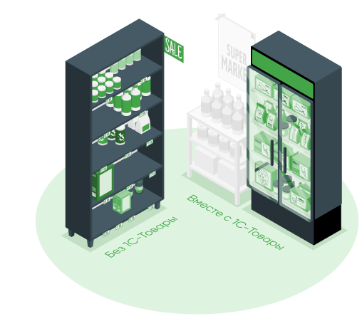
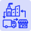
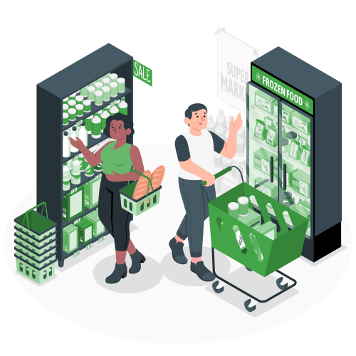
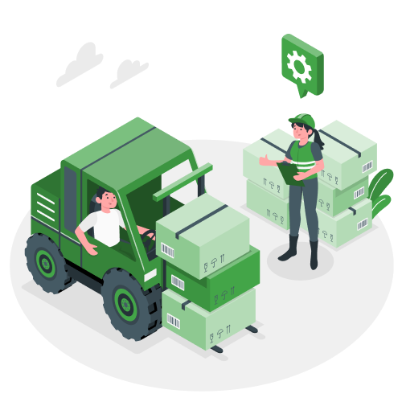

Использование сервиса 1С-Товары позволяет значительно упростить работу по формированию заявок поставщику.
Заказать демонстрацию

Управление запасами
Сервис 1С-Товары позволяет рассчитать необходимое количество товаров на полках (уровень запасов), помогает организовать систему контроля за остатками товаров, а также вовремя и в нужном количестве закупать у поставщиков.
ПодробнееАвтозаказ товаров
Сервис 1С-Товары позволяет рассчитать прогноз спроса. Сервис работает с равномерным и редким спросом для разных видов товаров. Автоматически подбирает подходящий метод расчета и позволяет внести корректировки в выполняемые расчеты.
ПодробнееАнализ магазина
Система контроля упущенных продаж позволяет увеличить выручку. Средний чек, минимальный чек, максимальный чек - это пример показателей, которые анализирует сервис 1С-Товары, а также предлагает ряд инструментов для управления ценой и торговой наценкой.
ПодробнееПрогнозирование спроса
Сервис 1С-Товары позволяет рассчитать прогноз спроса. Сервис работает с равномерным и редким спросом для разных видов товаров. Автоматически подбирает подходящий метод расчета и позволяет внести корректировки в выполняемые расчеты.
Подробнее
Управление поставками
Сервис 1С-Товары позволяет рассчитать прогноз спроса. Сервис работает с равномерным и редким спросом для разных видов товаров. Автоматически подбирает подходящий метод расчета и позволяет внести корректировки в выполняемые расчеты.
ПодробнееУправление ассортиментом
Сервис 1С-Товары позволяет определить ассортиментную матрицу. Быстро и просто принять решение о том какие товары вывести из ассортимента, а наличие каких увеличить на полках магазина. Сервис позволяет узнать необходимую информацию: динамику продаж и остатков, периоды дефицита, размер оптимального остатка.
ПодробнееУправление продажами
Система контроля упущенных продаж позволяет увеличить выручку. Средний чек, минимальный чек, максимальный чек - это пример показателей, которые анализирует сервис 1С-Товары, а также предлагает ряд инструментов для управления ценой и торговой наценкой.
ПодробнееПодключи любой продукт на 1 месяц бесплатно и оцени наши преимущества
С нами удобнее
Без 1С-Товары
- Лишний товар складируется и не продается
- Постоянно приходится думать какой продукт будет актуален, а какой стоит выводить из ассортимента
- Лишний товар складируется и не продается
- Постоянно приходится думать какой продукт будет актуален, а какой стоит выводить из ассортимента
- Лишний товар складируется и не продается
- Постоянно приходится думать какой продукт будет актуален, а какой стоит выводить из ассортимента
- Лишний товар складируется и не продается
Вместе с 1С-Товары
- Организованная система остатков
- В магазине есть определенная ассортиментная матрица, поддерживающая актуальный ассортимент
- Рассчитанный прогноз спроса
- В магазине есть определенная ассортиментная матрица, поддерживающая актуальный ассортимент
- Рассчитанный прогноз спроса
- В магазине есть определенная ассортиментная матрица, поддерживающая актуальный ассортимент
- Система контроля упущенных продаж
Популярные продукты
Все продукты1C-Товары 300
400 руб/мес- Прогноз спроса с использованием сервера прогнозирования (ограничение — 300 товаров)
- Контроль товарных остатков и автоматический заказ товаров
- Анализ работы розничного магазина или сети магазинов
- Рекомендации по управлению ассортиментом (1C-Ритейл Чекер)
1C-Товары 30000
1700 руб/мес- Прогноз спроса с использованием сервера прогнозирования (ограничение — 30000 товаров)
- Контроль товарных остатков и автоматический заказ товаров
- Анализ работы розничного магазина или сети магазинов
- Рекомендации по управлению ассортиментом (1C-Ритейл Чекер)
1C-Товары
4 500 руб/мес- Прогноз спроса с использованием сервера прогнозирования
- Контроль товарных остатков и автоматический заказ товаров
- Анализ работы розничного магазина или сети магазинов
- Рекомендации по управлению ассортиментом (1C-Ритейл Чекер)
Предоставляем техподдержку для наших клиентов
Если у вас возникнут сложности с использованием техподдержки. Техподдержка работает круглосуточно и доступна любыми удобными для вас способами. При использовании просьба соблюдать правила обращения.
Вы можете связаться с нами через 1С-Коннект и 1С-Товары. Поддержка пользователей
Телефон техподдержки
+7-495-111-00-10
E-mail техподдержки
info@rozn.info
Для розничных магазинов и ресторанов

Получайте рекомендации по управлению ассортиментом
Для этого подключите бесплатно новый тариф «1С-Ритейл Чекер».
- какие товары необходимо срочно купить, чтобы избежать упущенной прибыли из-за пустых полок;
- какие товары у вас в избытке, а какие следует отнести к неликвидам;
- какие товары стоит пересчитать, чтобы быть уверенным в правильности учета.
Прогнозируйте спрос и управляйте запасами
Используйте 1С-Товары для более точного прогноза спроса. 1С-Товары учитывают средние продажи, тренды, периоды дефицита товаров на полках, сезонность спроса, праздники, распродажи, акции.
Ежедневно 1С-Товары автоматически проверяют минимальные остатки и своевременно отправляют заявку поставщику.
Подробнее о 1С-Ритейл ЧекерПланируйте ассортимент без ошибок
Узнайте, какие товары приносят вам прибыль и всегда должны быть в ассортименте. И, наоборот, выводите из ассортимента товары с низкой наценкой и оборачиваемостью.
Контролируйте бизнес и повышайте прибыль
Для этого используйте блок аналитики.
Пробуйте разные варианты повышения продаж — новые товары, изменение цен, перераспределение площадей. Убедитесь в правильности действий с помощью отчетов.
Для оптовых поставщиков

Планируйте поставки товаров в собственные или арендованные торговые точки
Получайте с помощью 1С-Товары текущие остатки товаров в магазинах и правильно определяйте размер поставок.
Система прогноза спроса поможет обеспечить постоянное наличие ходового товара и избежать «оверстока».
Для такого сценария работы предусмотрен специальный тариф «1С-Товары 300».
Подробнее о 1С-Товары 300Повышайте эффективность обработки полученных заказов
1С-Товары позволяют синхронизировать наименования товаров у поставщика и магазина.
Это дает возможность автоматически загружать заявки от розничных магазинов в учетную систему и не тратить время на сопоставление номенклатуры.
Подробнее о 1С-Товары
Хотите бесплатную консультацию?
Оставляйте заявку
Оставляйте заявку и наши менеджеры свяжутся с
Вами в ближайшее время